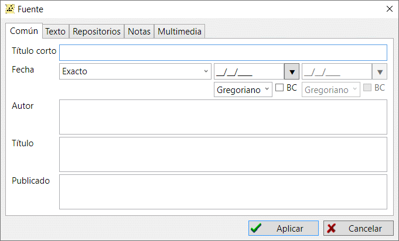

Una fuente es una referencia a cualquier documento privado, o a un expediente de un archivo, donde se encontró información sobre una persona. Los registros de fuentes se utilizan con los siguientes fines: almacenan información específica sobre el origen de la información y unifican y simplifican la búsqueda de una persona, familia y acontecimiento, que se menciona en un documento.
Puede tratarse de un certificado de nacimiento o defunción, un censo, un registro de nacimientos, un libro confesional u otros tipos de documentos.
Cada referencia a una fuente tiene dos propiedades adicionales: número de página o de pliego donde se hizo la mención y nivel de autenticidad de la información. Disponer de un número de página u hoja es útil cuando se necesita volver a revisar la fuente. El nivel de autenticidad le indica rápidamente hasta qué punto puede confiar en una fuente de información. Cuando un documento fuente tiene manchas o desperfectos, y no has podido leer el texto con seguridad, podrías asignar "Fiabilidad dudosa de las pruebas" como nivel a dicha fuente. Esto puede evitar que saques conclusiones falsas.
El nivel de autenticidad también afecta al índice de autenticidad, que se calcula para una persona en un módulo estadístico para analizar valores medios aritméticos. Los diagramas de árbol utilizan un nivel de autenticidad para que la información mostrada sea más obvia.
Un registro de fuente también tiene una propiedad de archivo (repositorio) que define dónde está almacenada la fuente. Cabe señalar que el término "archivo" aquí no es necesariamente un archivo estatal o una institución de archivo privada, sino que también podría ser una colección privada de documentos u otro tipo de almacenamiento de documentos.

En la pestaña "Fuentes" de la ventana principal de trabajo hay una tabla unificadora que incluye todas las fuentes disponibles en la base de datos. Un resumen de fuentes a la derecha de la tabla muestra toda la información sobre la fuente seleccionada y los enlaces realizados desde otros registros a la seleccionada.
Ver también: Persona, Familia, Evento/Hecho, Referencia a fuentes, Nota, Multimedia, Archivo y Direcciones.